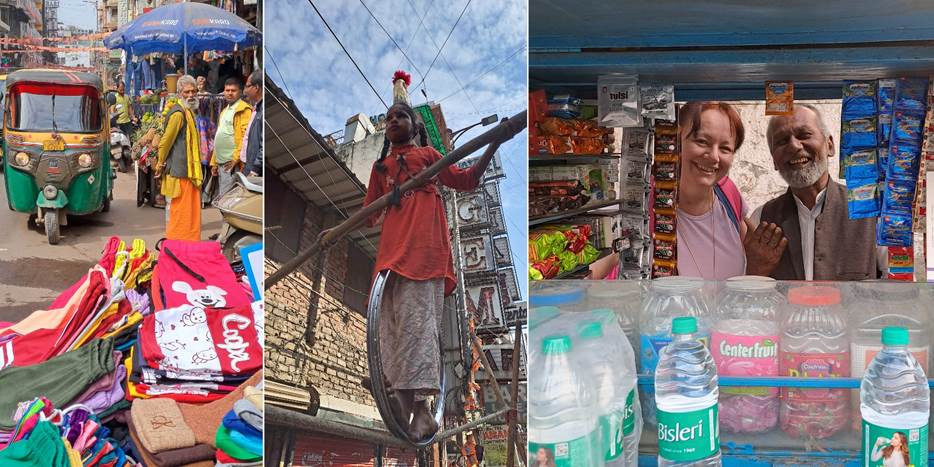

Prvi dan, Nju Delhi: Osmeh, blagoslov i selfi
Na aerodromu nas dočekao naš vodič. Niži dečkić, mršav, sa protezom, kapuljačom, sav istetoviran. Delovalo mi je da je smotan. Ti treba da me vodiš po Indiji? Ti treba da mi uliješ sigurnost? Bile smo vidno zapanjene, zgledajući se. Bio je to naš vodič Nikola, koji je prava faca, nema gde nije i kako živeo, razišli smo se u najvećoj ljubavi.
Indija, prvi utisak: jutro, izmaglica. Smog. Da, upozoreni smo na zagađenje. Ok, dišem, i to bez problema, nije strašno. Vožnja autobusom do smeštaja. Prošli i kroz neke bogatije delove Nju Delhija. Videla majmune na ulicama. Hej! Slobodne majmune! Šetaju (tj. skaču) kao kod nas mačke po ulicama. Mene je već kupila Indija. Srećna sam. Dovezli nas u naš kraj. Gde su bazari. Sve staro. To! Videla i dve lepe crne krave na ulici. Juhu! (posle se ispostavilo i jedine dve krave u Delhiju koje sam videla). Dočekali nas sa vencima narandžastog cveća koje su nam stavili oko vrata. Ma, šta da vam pričam.
Odveo nas Nikola grupno na doručak u neki restoran na otprilike četvrtom spratu. Zove se Exotic. Od gore pogled na lud saobraćaj, tuk tukove koji trube, devojčicu koja sedi na sred puta i svira u bubanj, oronule zgrade, haos od slika i zvukova. Oprezno naručujem američki doručak sa pečenim jajima i šunkom, misleći nek se sad najedem pa posle šta bude. Plašeći se gladi, ponela sam pola kofera plazmi i bobi štapića koje nisam pipnula jer mi se srećom jako dopala indijska hrana. Imala sam godinama visinske pripreme kod kuće sa Duškom sa njegovom prezačinjenom i ljutom hranom. Njemu hvala. Obožavala sam Indijsku hranu i uživala u njoj toliko da sam se uz sve celodnevne šetnje, ugojila kilu. Uglavnom, tu sam za doručak, misleći da sam baš hrabra, uzela svoj prvi mango lasi (nešto najbliže bi bio voćni jogurt od manga) u koji sam se zaljubila i nismo se razdvajali, do kraja putovanja sam mu ostala verna uživajući u njemu. Nekom je bio izazovan i Special lasi ali ne i meni. O tome kasnije.
Hotel Le Roi je preko puta restorana. Svi čekaju ključeve ali ne i ja. Toliki me je neizdrž uhvatio da tu i sada ja moram, jednostavno moram ili ću umreti, da prošetam ovim ulicama. Sa Natašom sam se dogovorila da mi javi kad dobijemo ključ. Skoro trećeći sam krenula, sva trepereći od sreće, plašljivo se probijajući kroz tuk tukove. Nema semafora niti pešačkih prelaza, oni se neprekidno kreću i trube a pešaci se probijaju, šou. A na ulici svega. Žena u šarenim sarijima, sika sa turbanima na glavi, devojčica što se vozi na točku na razapetom kanapu, meni iznad glave, od koje sam dobila najlepši osmeh kada sam joj ostavila bakšiš. Bazar, robe na sve strane, nenametljivi trgovci. Ljudi mili i smeše se. Sve šareno. Moj prvi “me time” (moje samostalno slobodno vreme) koje volim na svakom putovanju. Kao da sam u filmu, nestvarne scene.
Kasnije nas je i Nikola proveo gradom. Deo grada je sa muralima na zidovima. U blizini je i fensi deo, ulickan sa svetski poznatim brendovima. Pored njega, lep veliki park gde su bili plesovi u nošnjama koji sam propustila i to mi je najveći žal što u Indiji nešto nisam videla.
Šetajući sa Natašom, doživele smo da nam prilaze mladi momci, pitaju odakle smo, popričaju, požele dobrodošlicu u Indiju i traže selfi sa nama, ženama u godinama. Al bitna je samo bela koža. Ne znam na koliko smo slika i snimaka i društvenih mreža završile. Tamo smo bile tretirane kao poznate ličnosti.
U jednoj prostoriji, tipa mala soba tri sa tri, se održavala neka manifestacija. Okitili su žutim i narandžastim balonima, pevali. Neki verski obred. Jedna ženica mi se nasmešila pokazujući da mi je lep lančić (što mi je Petar poklonio za 8. Mart) i poklonila mi je narukvicu, zlatne perlice na crvenom koncu. Verujem da je to blagoslov jer ga je dala bramanu da mi je veže oko ruke.

Ne propustite sledeću avanturu!
Kad Sandra krene u novi kraj sveta, vaš inbox prvi sazna. Prijavite se i stižu vam sve nove priče mejlom.